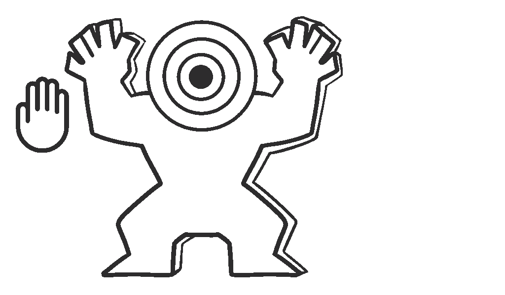

Bienvenue dans le clan des "Têtes Creux" !
Tu es un candidat pour devenir le prochain chef des “Têtes Creux”.
Durant cette épreuve tu devras prouver ta valeur en défendant ton peuple, en
combattant tes ennemies et en esquivant les pièges
derrière les murs grâce à ton super instinct.
En tant que participant du chef du clan, tu dois aussi avoir le meilleur coup de boule
!
Bonne chance à toi !
Qu'est ce que c'est ?
Tête creux est un endless game en VR. Équipé d'un Quest 2 et un SubPac, tu dois détruire les
obstacles en face de toi et gagner un maximum de points sans mourir.
Nous avions deux semaines, l'une pour le développement du jeu et l'autre pour
l'Expérience utilisateur.
Direction Artistique
Pour ce jeu, nous avions une contrainte graphique : L'univers Wood punk.
Les personnages encourageant Maui dans la musique "You’re Welcome" était une de
nos inspirations principal and l'univers et l'aspect du jeu.
Equipement utilisé
Pour ce projet nous avions aussi une contrainte technologique : Le Quest 2 et le SubPac.
Nous avons utilisé Blender et 3DS Max pour la
modélisation, Substance Painter pour le texturing et Unity
pour le développement du jeu.
Pour permettre à tout le monde de jouer à ce jeu, j'ai changé le code pour que les manettes vibrent à
la place du SubPac.
Expérience utilisateur
Nous avons développé le jeu la première semaine puis amélioré l'expérience
utilisateur la deuxième.
La principale différence entre les deux, est que le développement du jeu est basé sur le design
du jeu et le développement des actions centrées sur la base de l'idée du projet et l'
expérience utilisateur est centré sur l'expérience de l'utilisateur et les retours que
nous collectons pour améliorer le jeu.
Nous devions donc trouver des joueurs de différents horizons pour maximiser nos chances de
développer un jeu qui satisfait un maximum de joueurs.
Quitter & Rejouer
Les joueurs nous ont fait remarquer qu'il n'y avait pas de bouton "Quitter
et Rejouer".
Nous avons donc rajouté des boutons sans avertir les prochains utilisateurs pour savoir s'ils les
reconnaissaient.
Nous avons rajouté des traces de mains sur les panneaux pour que les joueurs comprennent mieux qu'il
faille appuyer dessus.
Le sol et les murs
Le sol et les murs n'avaient pas de marques, donc les joueurs ne
pouvaient pas les reconnaître entre eux.
Nous avons ajouté des traces de peinture sur le sol et des marques de
brûlure sur les murs.
Sans le dire aux nouveaux joueurs, ils ont réussi à les différencier.
Le Score et l'affichage de la vie
Les utilisateurs n'ont pas compris les panneaux, nous avons donc ajouté du texte et des icônes.
En plus, ils ne pouvaient pas les voir car il n'y avait pas assez de temps au début de
la partie, donc on a ralenti le lancement du jeu pour laisser le temps d'observer l'environnement t aux
joueurs.
Enemies
Nous voulions que le coup de boule soit exclusivement pour détruire les
murs.
Mais les joueurs essayaient de taper les ennemis avec, parce que les ennemis étaient
trop grands, ils apparaissent "forts".
Nous avons testé avec des petits monstres et ça marchait parfaitement.
Mais les montres étaient trop petits, les grands joueurs devaient se
baisser trop bas, ce qui rendait le jeu trop dur.
Nous avons donc mis les montres sur des pics pour les grandir sans les grossir.
Comme ça, les joueurs les giflaient naturellement.
Actions
Pour te défendre tu as trois choix :

Donner des coups de boules pour détruire les murs et gagner pleins de points.

Utiliser son poing pour vaincre les ennemis.
Ou détruire les murs avec ses deux mains.
Les murs
Deux méthodes pour les détruire :
Quand le SubPac (ou les manettes) vibrent, faites attention, il y a un piège !
L'instinct
Il y a trois couloirs sont marqués au sol pour t'aider.
Trouve le bon chemin avec les vibrations du SubPac (ou des manettes) pour éviter les pièges

Attention, à chaque fois, deux des murs sont piégés !
Enemies
Des ennemies vont venir vers toi
Faites attention ! Ils essayent de te tuer !.

Combat les avec tes poings
Merci d'être arrivé jusqu'ici !